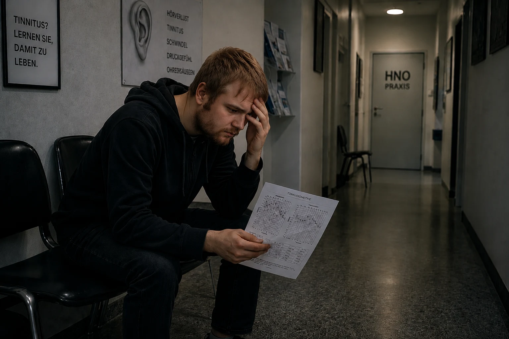
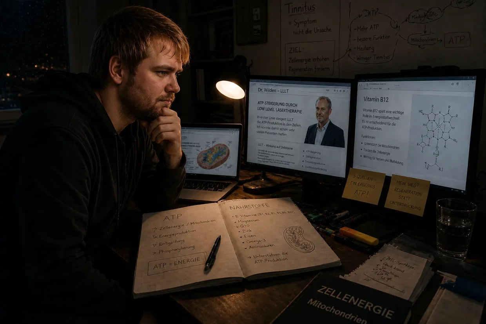

Mijn weg de tinnitushel in – deel 1: de helletocht
Hallo, ik ben Dustin Müller. Als iemand die het zelf heeft gehad (en meer dan één keer) had ik een enorme behoefte om deze site op te zetten. Met mijn jarenlange speurwerk, echte biohackingprotocollen en mijn eigen ervaringen wil ik andere mensen met tinnitus laten zien hoe ik persoonlijk bij volledige genezing ben uitgekomen. Maar voordat we diep in de mechanismen duiken, moet ik vertellen hoe het bij mij eigenlijk allemaal begon. En dat was geen medisch toeval, maar een frontale crash.
Zoek je de korte versie? Deze lange versie gaat tot in elk detail – de audiogrammen, de bezoeken aan de KNO-arts, elke afzonderlijke doorbraak. Wil je het compacter, dan is de korte versie de juiste plek.
Najaar 2011: het onoverwinnelijke lichaam en de voorbelasting
Je bent 23, je hebt energie voor tien en je denkt dat je lichaam alles wel kan hebben. Met die mindset ging ik ook met mijn oren om. Ik hield van muziek. Jarenlang zette ik mijn koptelefoon zo hard dat mijn ouders het door de dichte kamerdeur konden horen. Mijn systeem was al „murw gekookt", zonder dat ik het wist.
Het begon allemaal met mijn neef. Omdat ik nog nooit echt in een disco was geweest, moest ik mee naar de U60311 in Frankfurt. Ik had er een naar gevoel over, maar ik ging toch mee. Al op de trap naar beneden voelde ik hoe bruut die bas fysiek was. Naïef zocht ik binnen de zogenaamd beste plek op – ongeveer 10 meter pal voor de massieve boxen, met mijn linkeroor precies naar de geluidsbron. Dat was de fout die de eerste dominosteen omduwde.
De ochtend erna: de bedrieglijke vrede
Zodra de deur achter ons dichtviel, voelde ik die waanzinnige druk op mijn oren – links veel sterker. Alles klonk dof, als onder water. Mijn neef vond dat normaal, dat ging wel weer weg. Omdat ik dronken was, viel ik in bed. De volgende ochtend klapte ik bij mijn poging om op te staan direct terug in mijn kussen – mijn balanssysteem was aan gruzelementen, een heftige mechanische trek naar links.
Omdat ik een extreem oervertrouwen had in het herstelvermogen van mijn lichaam, nam ik het bijna met humor op: de tijd regelt dat wel. En zo leek het ook: op dag 2 werd die trek naar links beter, het drukgevoel verdween bijna helemaal. Ik slaakte een zucht van verlichting – ik dacht dat ik ermee weggekomen was.
Dag 3: het monster wordt wakker
Dag 3 na de disco. Ik werd wakker en hoorde opeens een geluid als een piepende koelkast. Wat is dat nou? Ik ging met mijn hoofd tegen de muur. Luisterde bij het stopcontact. Checkte de computer, de wekker. Niets. Toen legde ik mijn handen op mijn oren.
O shit. Het komt uit mij. Het zit in mijn hoofd.
Ik stond minuten lang in shock. Wat is dit? Blijft dit nu? In mijn linkeroor een gebrom, geruis, sirenes en een hard gepiep. In het rechter een zacht gepiep. Ondanks de schok dacht ik: dat gaat wel weer weg.
De vergiftiging van de software (de termijn van 14 dagen)
Op internet stuitte ik binnen een paar minuten op de antwoorden: acuut gehoorverlies en schade aan het binnenoor. Blijvend gehoorverlies, vaak oorsuizen. En toen die zin waarvan het bloed in mijn aderen stokte: „Het moet binnen 14 dagen behandeld worden – anders wordt het chronisch en houd je het je leven lang." Op het forum tinnitus.de las ik draadjes van mensen die er al 5 jaar mee leefden. Vijf jaar? Godallemachtig. Van een lichamelijk defect werd het een enorme psychologische dreiging.
Het verraad in het wit (mijn eerste bezoek aan de KNO-arts)

Ik ging naar de KNO-arts van mijn kindertijd. Hoop. Straks komt de verlossing. Ik vertelde over de disco en de klachten. Hij, al lichtelijk geïrriteerd: „Ja, luister er niet naar. Zet wat muziek op om die tonen te overstemmen." Ik hield aan: „Maar het moet toch binnen 14 dagen behandeld worden? En is nog meer geluid echt verstandig?" Hij: „We beginnen met een audiometrie." Zei het en verliet de kamer. Mijn vertrouwen brokkelde af.
De horror van de stilte (de audiometrie)
Pas toen ik de geluidscabine binnenstapte, merkte ik hoe heftig mijn gehoorschade werkelijk was. In die volstrekte stilte viel elke natuurlijke maskering weg – de geluiden in mijn oren waren ongelooflijk hard. De test bestond uit drie delen: de frequentie en het volume van de tinnitus bepalen, het algemene gehoor meten, en de beengeleiding op de schedel.
Het vonnis
De arts legde me met de uitslag in zijn hand uit dat mijn gehoor blijvend beschadigd was en dat je daar niets aan kon doen. Geschokt vroeg ik naar mijn kansen. Weer een beetje geïrriteerd: „U moet leren ermee te leven. Er niet naar luisteren, afleiding zoeken, koptelefoon op." Op mijn absurde vraag of ik nog naar disco's mocht: „Ja, dat geeft geen problemen." Daarmee nam hij afscheid.
De eed en de rit naar huis
De weg naar huis was een ware hel. Een loodzware last. In mijn wanhoop dacht ik even: of ik krijg dit weg, of ik wil niet meer leven. Maar thuisgekomen sloeg dat bodemloze verdriet ineens om in verzet. Ik kan niet geloven dat geen enkele arts in Duitsland weet wat tinnitus is. Ik kneep mijn handen tot vuisten:
„Of de tinnitus gaat, of ik ga. Ik laat niet toe dat dat ding mijn leven gaat bepalen. Ik moet zelf gaan kijken wat je eraan kunt doen."
Het wilde westen van de oplossingen

Ik ging het zelf uitzoeken en stuitte op een overweldigende hoeveelheid „therapieën":
- Cortison & ginkgo: middelen die de doorbloeding bevorderen en ontstekingen remmen – leek me logisch voor het herstel van mijn gehoor.
- Kaak en nek (CMD/nekwervels): theorieën dat spanning in de spieren die geluiden veroorzaakt. Maar omdat ik mijn tinnitus absoluut zeker door die discobas had opgelopen, sloeg mijn bullshitradar aan.
- TRT en maskeren: overstemmen met tonen. Ik kon de tinnitus daarmee inderdaad kortstondig zachter maken – maar zodra ik het geluid uitzette, kwam hij agressiever en harder terug. (Nu weet ik: elk nieuw geluid dwingt die toch al lege haarcellen tot werken – ze verbruiken hun laatste ATP, dat ze eigenlijk nodig hadden om te herstellen.)
- Supplementen: die mensen lachte ik toen uit. Wat een idioten, dacht ik. Dat ik later juist via die weg – echte celenergie, ATP-productie, de juiste voedingsstoffen – mijn tinnitus zou kraken, had ik nooit durven dromen.
Het tweede bezoek aan de KNO-arts: het fatale advies
Op de ochtend van mijn 2e KNO-afspraak was de tinnitus opeens flink harder. (Nu weet ik: dat was de witte ruis van de nacht, die mijn cellen weer op hun knieën had gedwongen.) De tweede KNO-arts was vriendelijk en bemoedigend. Hij schreef ginkgo voor en raadde genoeg slaap en beweging aan. Op mijn vraag over de koptelefoon: „Dat is zelfs goed, om je af te leiden." (Vanuit wat we vandaag over celbiologie weten een volstrekt fataal advies.) Op mijn vraag over die 3 maanden tot het chronisch wordt kwam alleen: „Dat zien we dan… je kunt ook leren hem te compenseren, dus volledig weg te filteren." Daar was het weer, dat halve zinnetje dat elke echte genezing uitsloot.
Het bedrieglijke hamsterwiel
Zo gingen dagen en weken voorbij. Overdag werd ik door school afgeleid. 's Avonds vluchtte ik in die bedrieglijke maskeerlus: muziek op de koptelefoon en continu watervalgeluiden op de achtergrond. Daarmee kon ik het op korte termijn draaglijk houden. Maar biologisch draaide ik rondjes: door die geluidsdeken hield ik mijn uitgeputte oren in permanente stress. Mijn cellen verbrandden hun laatste ATP aan het verwerken van dat kunstmatige geruis, in plaats van het te gebruiken voor de fysieke reparatie. Puur overlevingsmodus.
De tweede crash: hyperacusis en de vertigo-salto
Op een ochtend was er opeens weer een flinke druk op mijn linkeroor. Ik probeerde het te negeren en reed naar school. Omdat ik nog steeds op het advies van de artsen vertrouwde, maakte ik onderweg een fatale fout: mijn lievelingsnummer keihard op de autoradio. Ik had moeten omkeren – maar les kostte geld, dus reed ik door. (Die harde muziek was de allerlaatste druppel voor mijn compleet uitgeputte cellen.)
In het eerste uur zette opeens een sterke vervorming van het horen in, plus een pijnlijke overgevoeligheid voor normale geluiden – hyperacusis. (Nu weet ik: de „schokdempers" van mijn oor, de buitenste haarcellen, hadden hun laatste ATP verbruikt.) In de uren daarna werd de druk in mijn linkeroor steeds heviger. Toen gebeurde het: mijn hele beeld begon verticaal te draaien – als een halve salto in mijn hoofd. De wereld stond op zijn kop. Na een paar seconden werd het beeld weer normaal. Wat achterbleef: heftige zweefduizeligheid, een flinke trek naar links, dof horen aan de linkerkant. (De ionenstuwing in mijn binnenoor was zo gigantisch geworden dat ze het balansorgaan ernaast had overstroomd.)
In volle paniek probeerde ik het uit te houden. Zodra de pauze begon, nam ik de benen. De rit naar huis was onverantwoord – door die extreme duizeligheid moest ik om de paar seconden tegensturen. Maar ik wilde alleen maar in veiligheid zijn. Die tweede instorting was het ultieme keerpunt: Ik kan dit niet langer uitzitten.
KNO 3 en 4: pillen in plaats van antwoorden, de fantoomleugen en het psycholabel
Ik regelde diezelfde dag nog een spoedafspraak bij de 3e KNO-arts. Audiometrie, een reuktest, een test op „positieduizeligheid" die niets veranderde. (Nu is het duidelijk: geen losse kristallen, maar endolymfatische hydrops – daar helpt geen hoofd heen en weer bewegen tegen.) Een collega schoof de diagnose er nog achteraan: „opnieuw acuut gehoorverlies, over 14 dagen weg" – of misschien van verstopte bijholtes, puur gokken naar de klachten. Toen kwam de mokerslag: „Weet u, veel mensen raken in een depressie. Blijven de klachten, dan schrijf ik u met alle plezier antidepressiva voor." Ik zat daar en dacht dat ik het niet goed hoorde. Mijn balanssysteem was ingestort, en haar oplossing was… psychofarmaca? Ik zwoer het mezelf: nooit.
Bij de 4e KNO-arts – de „specialist" – legde ik mijn hele verhaal op tafel. In plaats van op het niveau van de cel in te gaan kwam er ijskoud: „Heeft u al eens van cognitieve gedragstherapie gehoord? Uw probleem is dat u zich te sterk op uw gehoorklachten richt en de tinnitus daarmee in stand houdt." Ik bracht ertegen in: „Maar dat geluid is toch fysiek ontstaan door die avond in de disco!" Hij reageerde er totaal niet op. Op mijn vraag over cortison: „Dat zou alleen in de eerste 14 dagen zin hebben. Bij u moet je uitgaan van een fantoomgeluid." Tot slot raadde hij me weer TRT met tegengeluid aan – en blokte af toen ik uitlegde dat mijn tinnitus door maskeren alleen agressiever werd. Het systeem had zich overgegeven en mij de schuld toegeschoven.
Het absolute dieptepunt: isolatie en een systeem dat faalt
De nachtmerrie bereikte zijn hoogtepunt op mijn eigen verjaardagsfeest (anderhalve maand na het acute gehoorverlies). Hyperacusis en vervormd horen maakten me gek. Mijn eigen tinnitus was zo hard dat hij alles wat anderen zeiden volledig overstemde. Er kwam nog een bizar verschijnsel bij: letters klonken totaal anders dan eerst – een „S" klonk als een „F", een „T" als een „D". Ik hield die overspoeling van prikkels niet meer uit, brak mijn eigen verjaardag af en vluchtte naar huis. In de dagen erna werd de duizeligheid zo extreem dat ik af en toe dreigde om te vallen – een geheel van klachten dat medisch overeenkomt met „de ziekte van Ménière". Ik zat volkomen geïsoleerd en afgesloten. Verlaten door het leven en verlaten door de artsen, die me alleen maar hadden ingeprent dat het tussen mijn oren zat en dat ik antidepressiva nodig had.
De eerste sleutelervaring: het bewijs tegen de fantoomleugen
Omdat ik sinds mijn kindertijd eczeem en psoriasis heb, escaleerde er juist laat in het weekend een ontsteking in mijn gehoorgang – dus sleepte ik me gedwongen naar de spoedeisende hulp van het universitair ziekenhuis in Frankfurt. De KNO-arts pakte een piepklein zuigertje om mijn gehoorgangen een voor een uit te zuigen. En precies op dat moment gebeurde die absolute sleutelervaring: terwijl dat schelle lawaai in mijn linkeroor raasde, voelde ik op datzelfde moment hoe de tinnitus daar agressief en explosief op dat kabaal reageerde. Bij mijn rechteroor daarna: exact hetzelfde.
Dat was een perfecte A/B-test op mijn eigen lichaam. Mijn verstand blies de uitspraken van die „specialist" in één keer aan stukken: een psychologisch fantoomgeluid reageert niet op hetzelfde moment op een puur mechanische geluidsprikkel in juist die ene gehoorgang! Die reactie was voor mij het absolute bewijs: de kapotte bron zat nog steeds daar beneden in mijn oor. De cellen schreeuwden onder dat lawaai onmiddellijk om hulp.
Cortison via een infuus en het verbandgaaswonder
De KNO-arts vroeg in het voorbijgaan hoe lang dat acute gehoorverlies al geleden was. Twee maanden. Omdat ik nog binnen die magische termijn van 3 maanden zat, was cortison een poging waard. Ik stemde direct in en bleef een nacht op de afdeling. In dat ziekenhuisbed zocht ik verder en kwam ik op de eigen website van een tinnituspatiënt terecht. Wat ik daar las, was op celniveau logisch: nog meer lawaai maakt tinnitus drastisch erger. Plus de link naar dr. Wilden en zijn low-level-lasertherapie, die de ATP-productie in de cellen gericht aanjaagt. Het paste 100 % bij mijn ervaring met dat zuigertje.
Na 3 dagen mocht ik naar huis – met dik verbandgaas in beide oren vanwege die ontsteking in mijn gehoorgang. Al tijdens die dagen merkte ik het: de tinnitus was merkbaar zachter geworden! Eerst dacht ik dat het aan het cortison lag. Maar toen ik op de site van dr. Wilden las hoe wezenlijk belangrijk het is om de stilte actief op te zoeken – sloeg de bliksem in: mijn oren waren dagenlang door dat verbandgaas flink afgesloten geweest! Een normale KNO-arts had mijn oren nooit zo extreem laten inpakken. Ik had onvrijwillig het bewijs gekregen dat volledige rust wél iets doet.

De knal, de dynamiek en het protocol van de volledige stilte
Een paar dagen later volgde nog een belangrijk inzicht. Bij het aanbrengen van een crème uit een flesje pal bij mijn oor was er opeens een heftige knal. In een fractie van een seconde gierde mijn tinnitus omhoog – MAAR hij zakte binnen heel korte tijd terug naar zijn „normale" niveau. Het werd me glashelder: mijn tinnitus was niets „vasts", maar juist extreem dynamisch! Hij reageerde in realtime op lawaai door erger te worden – en werd zachter zodra ik consequent de stilte opzocht.
Ik trok daar keiharde conclusies uit. Vanaf dat moment bracht ik actief zoveel tijd als mogelijk in volledige stilte door. Muziek, films, afspreken met vrienden gingen van dagelijkse kost naar zeldzame „beloningen" – en dan strikt zonder koptelefoon, heel zacht, heel kort.
Zes maanden stilte – en het vastlopen op 25 %
En INDERDAAD werd de tinnitus van maand tot maand zachter. Terugkijkend ongeveer een kwart minder volume na zo'n 8 maanden. Al kon ik die volledige stilte natuurlijk niet 100 % perfect volhouden – zelfs noodzakelijke autoritten (200 km heen en terug) brachten de tinnitus weer op dat harde niveau. Ik had dan zo'n hele week „voor niets" gespaard.
Toen kwam iets frustrerends: bij ongeveer 20–25 % verbetering stond de genezing opeens stil. Ik dreef mijn isolatie op de spits – ik ontweek gesprekken, droeg voortdurend oordoppen en had zelfs de tikkende klok uit mijn kamer verbannen. Maar er gebeurde niets meer. Nul.
Atlascorrectie, CMD en de nekwervels – de doodlopende weg
Toen kwam ik op het idee om me nog eens grondig in kaak, nekwervels en tinnitus te verdiepen. Ik stuitte op CMD (craniomandibulaire dysfunctie) en kreeg bij de tandarts een opbeetplaat. In een orthopedisch centrum werd een nekwervelsyndroom vastgesteld en krachttraining (Med X) voorgeschreven. Ik zette beide met ijzeren discipline door en hield daarnaast de stilte vol. Na 2 maanden kwam de ontnuchtering: mijn CMD- en nekklachten werden beter – maar aan de tinnitus veranderde ABSOLUUT NIETS.
Laatste redmiddel: atlascorrectie. Ik reed 200 km naar een natuurgeneeskundig therapeut, die mijn scheve atlas met speciale apparatuur en handgrepen weer op zijn plek zette. Ook dat leverde na weken – niets op. Het enige bijproduct: die therapeut raadde me psylliumvezels, een mengsel van mineraalklei en probiotica aan tegen mijn maagontsteking. En inderdaad: die maagontsteking, die al bijna een jaar niet te bedwingen was, verdween. Dat maakte indruk op me – de reguliere geneeskunde had gefaald, de natuurgeneeskundig therapeut had geleverd.
Vitamine B12 – de belangrijkste (toevallige) sleutelervaring
Mijn vader had in die tijd polyneuropathie. Zijn huisarts stelde een uitgesproken vitamine-B12-tekort vast en schreef injecties voor. Toen hij zich op een avond pal voor mijn ogen een ampul zette, zei hij kort daarna: minder pijn, en hij had het weer warmer. Zo'n klein rood ampulletje deed iets zó lichamelijks?
Ik ging zoeken en las: B12 is DE zenuwvitamine. Vegetariërs (dat was ik vanaf mijn 15e!) en mensen met een maagontsteking (die van mij was net over) lopen extra risico. Ik liet bij de huisarts bloed prikken: tekort bevestigd, helemaal onderaan de normschaal. Maar de arts weigerde me injecties – „nog binnen de normale waarden". Aangeslagen verliet ik de praktijk.
Toen mijn vader 's avonds zijn volgende B12-prik nodig had, vatte ik moed en liet ik er ook een zetten. Belangrijk: ik raad je uitdrukkelijk af om dit zonder begeleiding van een arts na te doen. Wauw – na een paar minuten voelde ik een betere doorbloeding, een aangename warmte, een helderder hoofd. Ik ging ontspannen naar bed.
DE VOLGENDE OCHTEND: het absolute wonder. Seconden na het wakker worden merkte ik het al – de tinnitus was enorm zachter geworden! Van 25 % verbetering opeens naar ruim 40 % verbetering. Ik lag daar verbijsterd, met tranen in mijn ogen. In de loop van de dag werd hij wel weer erger – maar niet tot het oude niveau. En de volgende ochtend weer: 40 %.
Op de site van dr. Wilden las ik dat zijn laser de ATP-productie in de cellen gericht aanjaagt. En B12 is onmisbaar voor precies die ATP-productie. HET KWARTJE VIEL! Misschien heb ik die dure laser helemaal niet nodig – ik kan dat ATP ook met gerichte voedingsstoffen omhoog krijgen.
Galkoliek en het lecithinewonder (de myelineschede)
Terwijl ik wachtte op hooggedoseerde multivitaminen uit de VS, sloeg de volgende ramp toe: een galkoliek door galstenen. Op de spoedeisende hulp midden in de nacht had de arts alleen een operatie te bieden – de galblaas eruit. Ik weigerde en ging op eigen risico naar huis.
Weer speurwerk op internet: iemand vertelde dat hij zijn galstenen volledig had opgelost door maandenlang lecithinekorrels te nemen. Ik haalde ze de volgende dag al, nam 30 g, en voelde inderdaad hoe de druk rechtsboven in mijn buik afnam. Belangrijk: bij galstenen moet je absoluut een arts erbij halen – dit is mijn heel persoonlijke ervaring in een acute situatie, geen behandeladvies voor anderen.
Maar het echte hoogtepunt kwam 3 dagen later: na een B12-injectie plus lecithinekorrels gebeurde er opnieuw een wonder. De dag erna: 60–65 % verbetering ten opzichte van het beginpunt! Na maanden stilstand. Ik ging zoeken: lecithine is een centraal bouwmateriaal voor de myelineschede (de isolatie van je zenuwen). En juist die raakt volgens het onderzoek beschadigd bij tinnitus door lawaai: „Vergelijkbaar met de plastic bescherming van een dun stroomkabeltje die kapot is." En B12 is DE belangrijkste vitamine voor het herstel van die myelineschede. Nou zeg – dus ik heb niet alleen ATP nodig, maar ook BOUWMATERIAAL!
De doorbraak naar 80 procent (de bypass via het B-complex)
Met lecithine, een multivitaminepreparaat en B12-injecties kwam de genezing verder – maar de tinnitus bleef op ongeveer 70 % verbetering staan. Mijn vermoeden: de andere B-vitamines werden niet genoeg opgenomen. Ik haalde B1 en B2 als ampullen, B3, B5 en B8 als hooggedoseerde tabletten. En YES YES YES: van week tot week weer een stukje minder! In maand 16–17 na die disco was er van de tinnitus werkelijk nog maar 20 % over (dus 80 % verbetering). Maar toen weer: stilstand.
De definitieve genezing: het „carpet bombing" van de cellen
Ik zocht als een bezetene verder en kwam tot de conclusie: B12 en lecithine alleen was veel te klein gedacht. Voor een volledige reparatie van myeline heeft je lichaam een hele reeks andere voedingsstoffen nodig – omega-3 (DHA/EPA), aminozuren, vitamine C, de vetoplosbare vitamines A/D/E/K, mineralen. Ik heb me er letterlijk mee overladen: 2x per week B-vitamine-injecties, 3–4x per week 30 g lecithine, dagelijks aminozuurpoeder, 3 g omega-3, hooggedoseerde vitamine C, het mineralenmengsel van Life Extension, magnesium en zink van NOW Foods, dagelijks een glas LaVita, plus multivitaminetabletten van Dr. Rath. Een orthomoleculair „carpet bombing".
Met die complete stapel voedingsstoffen veranderde de dynamiek definitief. Mijn lichaam had nu ATP-energie ÉN het hele palet aan bouwmateriaal. In combinatie met de monnikenmodus kon het eindelijk echt aan het werk. Net als in het begin: 's ochtends was de accu van mijn cellen door de slaap vol opgeladen – topconditie. 's Avonds, door de vermoeidheid van de dag, werd de tinnitus weer harder. Maar de stilte vrat zich steeds verder de dag in: eerst was de toon tot de middag verdwenen. Toen tot de namiddag. De terugvallen 's avonds werden steeds zwakker en korter.
Met die complete stapel voedingsstoffen veranderde de dynamiek definitief. Mijn lichaam had nu ATP-energie ÉN het hele palet aan bouwmateriaal. In combinatie met de monnikenmodus kon het eindelijk echt aan het werk. Net als in het begin: 's ochtends was de accu van mijn cellen door de slaap vol opgeladen – topconditie. 's Avonds, door de vermoeidheid van de dag, werd de tinnitus weer harder. Maar de stilte vrat zich steeds verder de dag in: eerst was de toon tot de middag verdwenen. Toen tot de namiddag. De terugvallen 's avonds werden steeds zwakker en korter.
En toen kwam die ene, laatste ochtend – ik zal hem nooit vergeten. Al in een fractie van een seconde, toen ik wakker werd, voelde ik het: het voelt anders in mijn hoofd. Met een bonkend hart – zo opgewonden als een kind op sinterklaasavond – duwde ik mijn oordoppen diep in mijn oren. Ik luisterde… en er was absoluut NIETS.
De dimmer stond definitief op nul. 's Ochtends, 's middags, 's avonds – niets meer. Alleen die natuurlijke, vredige stilte die ik bijna twee jaar niet meer gekend had. De tinnitus was weg. Volledig verdwenen.
Dat gevoel was niet te beschrijven. Een diepe, warme opluchting – en een absolute voldoening. Ik had gewonnen: niet opgegeven, getriomfeerd over de „leer ermee te leven"-artsen, en die dure laser aan het eind niet eens nodig gehad. Mijn lichaam had het zelf gerepareerd. De myelineschede was hersteld, het actineskelet van de gehoorcellen stond, het loszittende contact was gemaakt, mijn hersenen hadden de noodversterker (central gain) uitgezet. De biologie had het gewonnen.
Wat ik die ochtend nog niet wist: veel maanden later zou mijn lichaam door een andere fatale kettingreactie in het zwaarste CVS (chronisch vermoeidheidssyndroom) storten. Maar die kennis – dat je zelfs het „ongeneeslijke" kunt genezen – nam ik mee de volgende hel in.
Het verhaal is hier nog niet voorbij. Wat er na die eerste triomf kwam, was de eigenlijke vuurproef – en het bewuste, gekke bewijs dat mijn biologische model werkelijk werkt.